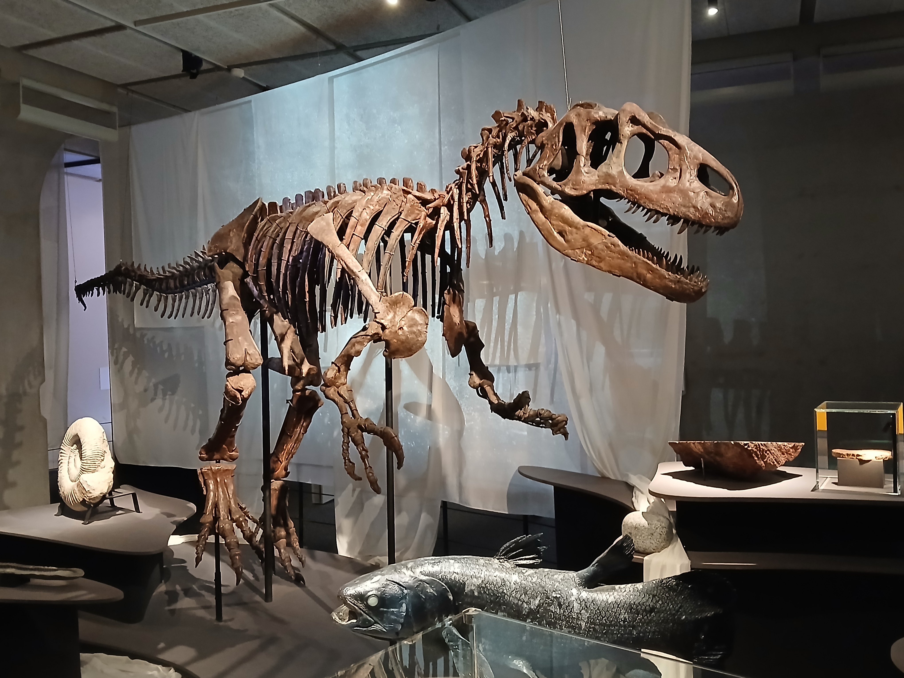

Mis metas e ideas
Aquí quiero profundizar más en mi trabajo actual, mis proyectos, mis conceptos, mis ideas y la realización de cada una de ellas.
Quiero empezar con mi primer proyecto en el curso de MBO4 Software Developer, llamado DinoInfoDex.
Lo admito: el nombre suena muy parecido al de sitios web como "Pokédex", y la base también es muy parecida, pero hay muchas diferencias.
Por ejemplo, en mi proyecto puedes cambiar el brillo entre modo diario, nocturno y del sistema, algo que no está presente en "Pokédex".
Además, en DinoInfoDex añadí cosas como la comunidad, una FAQ y la posibilidad de participar en la redacción de información sobre cada especie de dinosaurio.
Eso también explica el nombre del proyecto.

Lo que también está presente son cuatro idiomas entre los que puedes elegir: español, inglés, portugués y francés, (que fue mi última actualización del proyecto).
Toda la información que aparece en el proyecto viene de
Wikipedia, una fuente relativamente fiable y pública, lo que me facilita el trabajo porque en la mayoría de los casos no necesito pedir permisos a los autores, algo que me llevaría mucho tiempo.
Decir sinceramente que el proyecto no fue fácil en absoluto, porque gasté dos semanas programándolo (con ayuda de
Copilot y tutoriales de
YouTube).
Cuando comprobé cómo funcionaba el proyecto, lo encontré terrible y lo borré todo, luego gasté otra semana más en diseñar la imagen que realmente quería ver.
Vi muchos tutoriales e intenté aprender todo lo posible.
Después encontré varios videos en los que aplicaba códigos que había visto en tutoriales, pero además añadí algo propio: el tema del proyecto, los colores, la información, etc.
Sin embargo, algunas cosas no me funcionaban bien. Entonces empecé a explorar de verdad VS Code, el software en el que estoy haciendo mis trabajos(incluido este sitio web). Despues encontré algo curioso: tenía toda la información necesaria sobre los agentes(son asistentes de código basados en IA).
Empecé a usarlos en mi proyecto. Debo admitir que no siempre fue tan limpio como me gustaría. Pero hubieran cosas bastante complicadas de hacer por mi cuenta, como traducir la información de cada una de las 200 especies del sitio a cuatro idiomas, o conectar la web con la fuente para extraer la información.
Por eso gasté otras tres semanas más en hacer que el sitio funcionara como yo planeaba.
Aunque mi nivel de conocimiento de la
programación era bastante abstracto, la base la había hecho por mi mismo con la ayuda de los tutoriales.
Admito que aprender de tutoriales no siempre es la mejor manera de aprender a programar, pero en algunos casos es mejor que nada.
Desde hace un mes o poco más, empecé a aprender
programación en mi móvil con la app MIMO.
Ya se, que el nombre suena gracioso, con el tiempo poco a poco fui comprendiendo mejor qué son conceptos como if, else, const, let y console.log.
Eso me ayudó a sentirme más seguro de lo que estaba haciendo, porque ya no lo hacía a ciegas.
Cuando terminé el proyecto, lo mostré a mi profesor y lo expliqué como lo había hecho, después me preguntó sobre cosas como GDPR, licencias, derecho de autor, GitHub y demás herramientas.
Yo no tenía ni idea de que la
programación no fuera solo código.
Empecé a cumplir otras tareas para entender mejor cómo hacer mis proyectos en el futuro, hasta que finalmente aprendí
programación en Codecademy.
Desde entonces he seguido aprendiendo la base de la programación, no solo con MIMO, sino también con Codecademy.
Ahora me siento mucho más seguro trabajando con código y ya sé más conceptos y cómo utilizarlos.
Quiero mejorar
DinoInfoDex por muchas razones, pero las más importantes son: fallos en la traducción a otros idiomas, problemas con la búsqueda de especies y con las categorías (como país, longitud, peso o período en el que vivió el dinosaurio).
Pero lo que más me molesta es que la carga del sitio tarda demasiado.
Por eso quiero mejorar mis habilidades en JavaScript, CSS y HTML haciendo cada vez más proyectos y ejercicios, viendo tutoriales y pidiendo consejos a mis compañeros, a otros programadores con más experiencia y a mis profesores.


 Ya sé que es bastante inusual que un pasante empiece a hacer cosas que no tienen relación con su trabajo, pero hay una explicación detrás.
Verán, no era el único pasante allí; había otro compañero que también trabajaba en el mismo lugar y era mi compañero de clase en el colegio.
Nos llevábamos muy bien y ambos estábamos motivados para trabajar, aprender cosas nuevas y aplicar nuestros conocimientos en la práctica.
Sin embargo, al pasar el primer mes, todos se dieron cuenta de que no había mucho trabajo para los dos pasantes.
Ya sé que es bastante inusual que un pasante empiece a hacer cosas que no tienen relación con su trabajo, pero hay una explicación detrás.
Verán, no era el único pasante allí; había otro compañero que también trabajaba en el mismo lugar y era mi compañero de clase en el colegio.
Nos llevábamos muy bien y ambos estábamos motivados para trabajar, aprender cosas nuevas y aplicar nuestros conocimientos en la práctica.
Sin embargo, al pasar el primer mes, todos se dieron cuenta de que no había mucho trabajo para los dos pasantes.